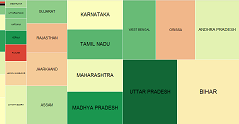
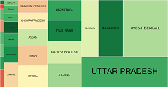
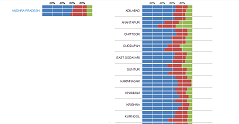
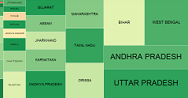
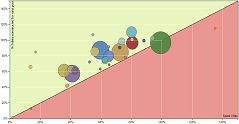

Rural sanitation scheme - progress & performance
We can find out how the rural sanitation scheme is doing because of the data that is published on the Ministry of the Drinking Water and Sanitation website. This project aims to create simple tools that will demystify the large datasets and compare it to other relevant datasets.
Money spent
Total money spent on rural sanitation
How much money has each state spent on the rural sanitation scheme?
Money spent
Spending on Rural Sanitation
What is the spending on the various components of rural sanitation?
Money spent
Money Spent on building toilets for the Rural Poor
How have the incentives been given for toilet construction?
Money spent
Money spent on sanitation coverage of rural schools
How effectively has money allotted for providing sanitation in rural schools been spent?
Money spent
Money spent on sanitation coverage of rural nursery schools
Is the spending on track for rural nursery schools (anganwadis)?
Money spent
Money Given vs Money Spent
What is the contribution of the state, centre and people towards toilet construction?
Toilets built
Total sanitation coverage
How many toilets has rural India constructed?
Toilets built
Evaluation of toilets built for the rural poor
How many toilets were built for rural poor households? Have targets been met?
Toilets built

Coverage of toilets Rural households
How does toilet coverage compare with total rural households as per census 2011?
Toilets built
Toilets built for Schools
Toilets built for Schools
This is critical because it helps inculcate sanitation habits from childhood. Has toilet construction kept pace with targets?
Toilets built
Toilets built for Nursery Schools
Nursery schools are important to prevent child malnutrition and hunger. Have we been able to provide them with toilets?
Toilets built

Toilets built for the rural poor - data.gov.in
MDWS data on rural poor toilet coverage on opendata.gov.in
Performance
Comparing spending to toilet construction
How do toilet construction and spending on toilet construction compare?
Performance
Toilet coverage Census 2001 - 2011
Changes in rural toilet coverage over the decade - Census 2001 to 2011.
State Profiles
State performance in rural sanitation
Find out how your state is doing in rural sanitation.
Data Change

Changes to data entry
Have the states entered data into the IMIS this month?
For more queries and feedback please contact us: click here